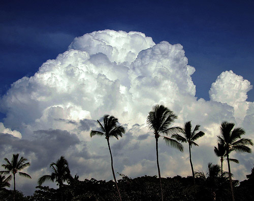
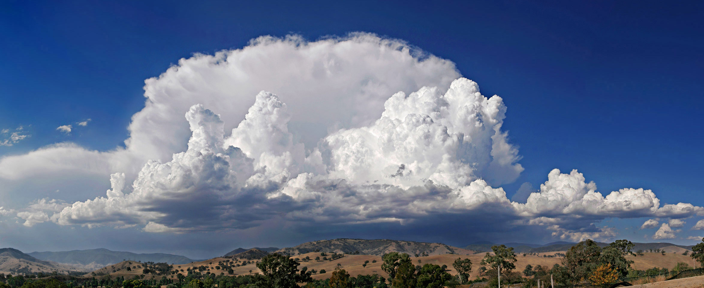
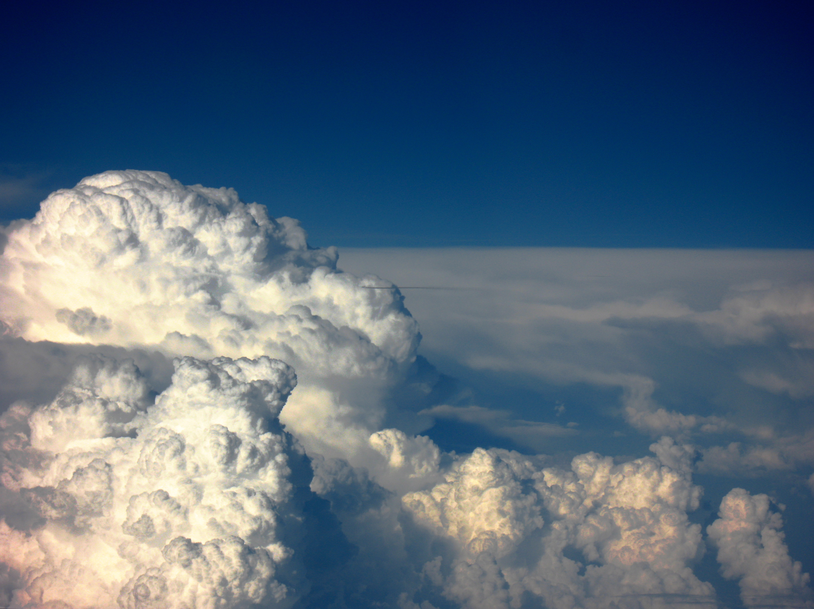

    <div class="container">
      <!-- Example row of columns -->
      <div class="row" id="main">
        <div class="span4">
         <h2>Cumulus Clouds</h2>
		 
	<h2 class="media-title">About Cumulus Clouds</h2>
           <p>Cumulus clouds are a genus-type of low-level cloud that can have noticeable vertical development and clearly defined edges. Cumulo- means "heap" or "pile" in Latin.They are often described as "puffy" or "cotton-like" in appearance, and generally have flat bases. Cumulus clouds, being low-stage clouds, are generally less than 6,500 feet (2,000 m) in altitude unless they are the more vertical cumulus congestus form. Cumulus clouds may appear by themselves, in lines, or in clusters.
Cumulus clouds are often precursors of other types of cloud, such as cumulonimbus, when influenced by weather factors such as instability, moisture, and temperature gradient. Normally, cumulus clouds produce little or no precipitation, but they can grow into the precipitation-bearing congestus or cumulonimbus clouds. Cumulus clouds can be formed from water vapor, supercooled water droplets, or ice crystals, depending upon the ambient temperature. They come in many distinct subforms, and generally cool the earth by reflecting the incoming solar radiation. Cumulus clouds are part of the larger category of free-convective cumuliform clouds, which include cumulonimbus clouds. The latter genus-type is sometimes categorized separately as cumulonimbiform due to its more complex structure that often includes a cirriform or anvil top. There are also cumuliform clouds of limited convection that comprise stratocumulus clouds (low-étage), altocumulus clouds (middle-étage) and cirrocumulus clouds (high-étage). These latter genus types are sometimes classified separately as stratocumuliform because they have both stratiform and cumuliform characteristics.</p>
</div>
<div class="span7">
		 <h2 class="media-title">Description</h2>
           <p>The liquid water density within a cumulus cloud has been found to change with height above the cloud base rather than being approximately constant throughout the cloud. At the cloud base, the concentration was 0 grams of liquid water per kilogram of air. As altitude increased, the concentration rapidly increased to the maximum concentration near the middle of the cloud. The maximum concentration was found to be anything up to 1.25 grams of water per kilogram of air. The concentration slowly dropped off as altitude increased to the height of the top of the cloud, where it immediately dropped to zero again. Cumulus clouds can form in lines stretching over 300 miles (480 km) long called cloud streets. These cloud streets cover vast areas and may be broken or continuous. They form when wind shear causes horizontal circulation in the atmosphere, producing the long, tubular cloud streets. They generally form during high-pressure systems, such as after a cold front.</p>
<p>The height at which the cloud forms depends on the amount of moisture in the thermal that forms the cloud. Humid air will generally result in a lower cloud base. In temperate areas, the base of the cumulus clouds is usually below 6,000 feet (1,800 m) above ground level, but it can range up to 8,000 feet (2,400 m) in altitude. In arid and mountainous areas, the cloud base can be in excess of 20,000 feet (6,100 m).
Cumulus clouds can be composed of ice crystals, water droplets, supercooled water droplets, or a mixture of them. The water droplets form when water vapor condenses on the nuclei, and they may then coalesce into larger and larger droplets. In temperate regions, the cloud bases studied ranged from 500 to 1,500 metres (1,600 to 4,900 ft) above ground level. These clouds were normally above 25 °C (77 °F), and the concentration of droplets ranged from 23 to 1300 droplets per cubic centimeter (380 to 21,300 droplets per cubic inch). This data was taken from growing isolated cumulus clouds that were not precipitating. The droplets were very small, ranging down to around 5 micrometers in diameter. Although smaller droplets may have been present, the measurements were not sensitive enough to detect them. The smallest droplets were found in the lower portions of the clouds, with the percentage of large droplets (around 20 to 30 micrometers) rising dramatically in the upper regions of the cloud. The droplet size distribution was slightly bimodal in nature, with peaks at the small and large droplet sizes and a slight trough in the intermediate size range. The skew was roughly neutral. Furthermore, large droplet size is roughly inversely proportional to the droplet concentration per unit volume of air. In places, cumulus clouds can have "holes" where there are no water droplets. These can occur when winds tear the cloud and incorporate the environmental air or when strong downdrafts evaporate the water.</p>
       </div>
	     <div class="span4">
          <h2 class="media-title">Formation</h2>
           <p>Cumulus clouds form via atmospheric convection as air warmed by the surface begins to rise. As the air rises, the temperature drops (following the lapse rate), causing the relative humidity (RH) to rise. If convection reaches a certain level the RH reaches one hundred percent, and the "wet-adiabatic" phase begins. At this point a positive feedback ensues: since the RH is above 100%, water vapour condenses, releasing latent heat, warming the air and spurring further convection.
In this phase, water vapor condenses on various nuclei present in the air, forming the cloud. This creates the characteristic flat-bottomed puffy shape associated with cumulus clouds. The size of the cloud depends on the temperature profile of the atmosphere and the presence of any inversions. During the convection, surrounding air is entrained (mixed) with the thermal and the total mass of the ascending air increases.
Rain forms in a cumulus cloud via a process involving two non-discrete stages. The first stage occurs after the droplets coalesce onto the various nuclei. Langmuir writes that surface tension in the water droplets provides a slightly higher pressure on the droplet, raising the vapor pressure by a small amount. The increased pressure results in those droplets evaporating and the resulting water vapor condensing on the larger droplets. Due to the extremely small size of the evaporating water droplets, this process becomes largely meaningless after the larger droplets have grown to around 20 to 30 micrometres, and the second stage takes over. In the accretion phase, the raindrop begins to fall, and other droplets collide and combine with it to increase the size of the raindrop. Langmuir was able to develop a formula which predicted that the droplet radius would grow unboundedly within a discrete time period.</p>
</div>
     <div class="span4">
          <h2 class="media-title">Subforms</h2>
           <p>Cumulus clouds come in four distinct species, cumulis humilis, mediocris, congestus, and fractus. These species may be arranged into the variety, cumulus radiatus; and may be accompanied by up to seven supplementary features, cumulus pileus, velum, virga, praecipitatio, arcus, pannus, and tuba. The species Cumulus fractus is ragged in appearance and can form in clear air as a precursor to cumulus humilis and larger cumulus species-types; or it can form in precipitation as the supplementary feature pannus (also called scud) which can also include stratus fractus of bad weather. Cumulus humilis clouds look like puffy, flattened shapes. Cumulus mediocris clouds look similar, except that they have some vertical development. Cumulus congestus clouds have a cauliflower-like structure and tower high into the atmosphere, hence their alternate name "towering cumulus". The variety Cumulus radiatus forms in radial bands called cloud streets and can comprise any of the four species of cumulus.
Cumulus supplementary features are most commonly seen with the species congestus. Cumulus virga clouds are cumulus clouds producing virga (precipitation that evaporates while aloft), and cumulus praecipitatio produce precipitation that reaches the Earth's surface. Cumulus pannus comprise shredded clouds that normally appear beneath the parent cumulus cloud during precipitation. Cumulus arcus clouds have a gust front, and cumulus tuba clouds have funnel clouds or tornadoes. Cumulus pileus clouds refer to cumulus clouds that have grown so rapidly as to force the formation of pileus over the top of the cloud. Cumulus velum clouds have an ice crystal veil over the growing top of the cloud.</p>
				
		   </div>
        <div class="span7">
          <h2 class="media-title">Relation to other clouds</h2>
           <p>Cumulus clouds are a genus of free-convective low-étage cloud along with the related limited-convective cumuliform or stratocumuliform cloud stratocumulus. These clouds form from ground level to 6,500 feet (2,000 m) at all latitudes. Stratus clouds are also low-étage. In the middle étage are the alto clouds, which consist of the limiited-convective cumuliform or stratocumuliform cloud altocumulus and the stratiform cloud altostratus. Middle-étage clouds form from 6,500 feet (2,000 m) to 13,000 feet (4,000 m) in polar areas, 23,000 feet (7,000 m) in temperate areas, and 25,000 feet (7,600 m) in tropical areas. The high-étage clouds are all cirriform, one of which, cirrocumulus, is also cumuliform of limited convection or stratocumuliform. The other clouds in this étage are cirrus and cirrostratus. High-étage clouds form 10,000 to 25,000 feet (3,000 to 7,600 m) in high latitudes, 16,500 to 40,000 feet (5,000 to 12,000 m) in temperate latitudes, and 20,000 to 60,000 feet (6,100 to 18,000 m) in low, tropical latitudes. Cumulonimbus clouds, like cumulus congestus, extend vertically rather than remaining confined to one étage.</p>
		   
       </div>
	     <div class="span4">
          <h2 class="media-title">Cirrocumulus</h2>
           <p>Cirrocumulus clouds form in sheets or patches and do not cast shadows. They commonly appear in regular, rippling patterns or in rows of clouds with clear areas between. Cirrocumulus are, like other members of the cumuliform category, formed via convective processes. Significant growth of these patches indicates high-altitude instability and can signal the approach of poorer weather. The ice crystals in the bottoms of cirrocumulus clouds tend to be in the form of hexagonal cylinders. They are not solid, but instead tend to have stepped funnels coming in from the ends. Towards the top of the cloud, these crystals have a tendency to clump together. These clouds do not last long, and they tend to change into cirrus because as the water vapor continues to deposit on the ice crystals, they eventually begin to fall, destroying the upward convection. The cloud then dissipates into cirrus. Cirrocumulus clouds come in four species: stratiformis, lenticularis, castellanus, and floccus. They are iridescent when the constituent supercooled water droplets are all about the same size.</p>
		<h2 class="media-title">Altocumulus</h2>
		<p>Altocumulus clouds are a middle-étage cloud that forms from 6,500 feet (2,000 m) high to 13,000 feet (4,000 m) in polar areas, 23,000 feet (7,000 m) in temperate areas, and 25,000 feet (7,600 m) in tropical areas. They can have precipitation and are commonly composed of a mixture of ice crystals, supercooled water droplets, and water droplets in temperate latitudes. However, the liquid water concentration was almost always significantly greater than the concentration of ice crystals, and the maximum concentration of liquid water tended to be at the top of the cloud while the ice concentrated itself at the bottom. The ice crystals in the base of the altocumulus clouds and in the virga were found to be dendrites or conglomerations of dendrites while needles and plates resided more towards the top. Altocumulus clouds can form via convection or via the forced uplift caused by a warm front. Because Altocumulus is a genus-type of limited convection, it is divided into the same four species as cirrocumulus.</p>
		</div>
		  <div class="span4">
		<h2 class="media-title">Stratocumulus</h2>
		<p>A stratocumulus cloud is another type of a cumuliform or stratocumuliform cloud. Like cumulus clouds, they form at low levels and via convection. However, unlike cumulus clouds, their growth is almost completely retarded by a strong inversion. As a result, they flatten out like stratus clouds, giving them a layered appearance. These clouds are extremely common, covering on average around twenty-three percent of the earth's oceans and twelve percent of the earth's continents. They are less common in tropical areas and commonly form after cold fronts. Additionally, stratocumulus clouds reflect a large amount of the incoming sunlight, producing a net cooling effect. Stratocumulus clouds can produce drizzle, which stabilizes the cloud by warming it and reducing turbulent mixing. Being a cloud of limited convection, stratocumulus is divided into three species; stratiformis, lenticularis, and castellanus, that are common to the higher stratocumuliform genus-types.</p>
		</div>
		  <div class="span4">
		<h2 class="media-title">Cumulonimbus</h2>
		<p>Cumulonimbus clouds are the final form of growing cumulus clouds. They form when cumulus congestus clouds develop a strong updraft that propels their tops higher and higher into the atmosphere until they reach the tropopause at 60,000 feet (18,000 m) in altitude. Cumulonimbus clouds, commonly called thunderheads, can produce high winds, torrential rain, lightning, gust fronts, waterspouts, funnel clouds, and tornadoes. They commonly have anvil clouds.</p>
		
		
		
		   
       </div>

    </div>
</div>

